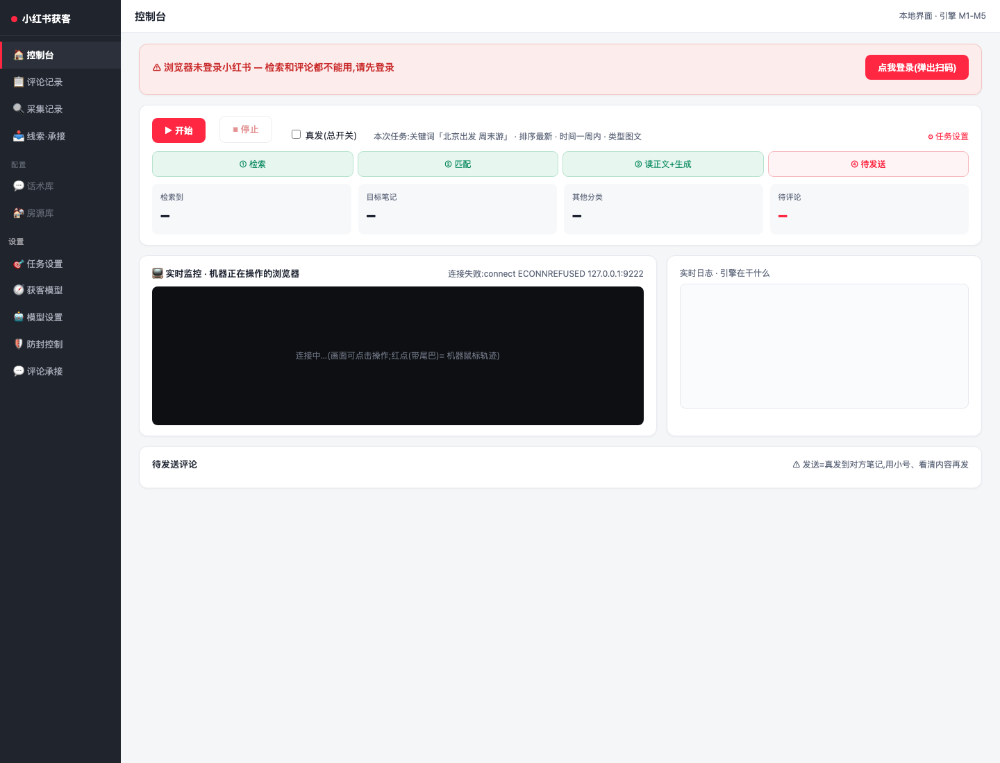

小红书自动化获客工具
产品功能手册
这份手册按运营真实顺序组织：先把账号、房源和规则配置好，再生产并查看待发布笔记，然后跑自动浏览检索、自动评论、自动回复评论、自动回复私信，最后从管理视角复盘笔记、评论、回复和线索。
手册继续覆盖侧边栏、顶部操作、数据表、抽屉、手机私信页、浏览器监控区和步骤标注。
产品全景
一个桌面客户端驱动一个真实小红书账号，围绕“找人、触达、承接、沉淀”形成闭环。
图 1-1 总览图采用完整桌面端布局，明确“当前可用、增强中、规划中”的能力边界。
初次使用 · 登录与接入
路径：根目录双击 启动小红书获客.command 或命令行 cd client && npm run app

图 2-1 当前控制台实际页面：未登录时顶部提示登录，小红书动作被拦截；登录后在同页点击开始、切换真发，并观察任务阶段、实时监控、实时日志和待发送评论。
打开客户端
进入控制台，确认右侧真实小红书页面可见。
扫码或手动登录
未登录时点“点我登录”，在右侧页面完成登录。
先演练后真发
首次运行保持真发关闭，确认规则和话术都正常再打开。
初次使用 · 任务设置
路径：设置 › 任务设置
图 2-2 任务设置图把关键词、筛选、评论方向、排班与保存按钮放在同一真实页面里。
初次使用 · 获客模型
路径：设置 › 获客模型
管理者不用把所有关键词写死，只要描述每个分类的判断口径。系统先用规则做边界和排除，再让大模型结合笔记标题、正文、图片一起分析，判断它属于哪类以及应该执行什么动作。
图 2-3 获客模型图强调“规则 + 大模型综合判断”：标题、正文、图片一起进入分析，给出分类、把握程度和建议动作。
| 建议分类 | 管理诉求 | 判断描述 | 建议动作 |
|---|---|---|---|
| 求租笔记 | 核心获客对象，优先处理。 | 标题、正文或图片表达“正在找房、咨询租房、描述预算户型区域”等意图。 | 评论 进入待评论队列。 |
| 高意向求租 | 已经表达强需求或看房意愿。 | 内容里已经出现明确预算、入住时间、想看房、想继续沟通等信号。 | 重点 评论后进入人工确认/线索观察。 |
| 房源笔记 | 对方是在发房，不是客户。 | 标题、正文或图片呈现房源发布、转租、招租、房间展示等内容。 | 只记录 或跳过，避免误触达。 |
| 中介/同行 | 保护账号，避免同行互评。 | 作者身份、文案风格或图片物料像房产营销、门店号、批量房源号。 | 跳过 并记录原因。 |
| 无关/不明 | 判断不确定，避免误发。 | 标题、正文、图片无法形成稳定判断，或分类之间存在冲突。 | 人工确认 或只记录。 |
| 动作 | 适用对象 | 含义 | 管理建议 |
|---|---|---|---|
| 评论 | 求租笔记 / 高意向求租 | 生成评论草稿，过合规和限频后进入演练或真发。 | 只给高价值分类开启，避免评论泛滥。 |
| 回复 | 评论承接 / 私信承接 | 对方已经互动后，按承接规则生成回复。 | 与“评论承接”规则联动，优先处理高意向。 |
| 跳过 | 同行、中介、无关、风险内容 | 不生成触达动作，只保留跳过原因。 | 用于风控保护和降低无效触达。 |
| 只记录 | 房源笔记、竞品样本、不确定内容 | 记录到采集/管理视角，不进入待评论。 | 方便复盘分类质量和市场样本。 |
| 人工确认 | 判断不确定、高价值、信息冲突 | 进入人工确认队列，再决定是否评论/回复/转线索。 | 适合新规则上线初期和高风险账号。 |
初次使用 · 安全、模型与拟人
“模型与防封”和“防风控与拟人”本质是同一组运行保护能力：文案生成、真发限频、合规红线、拟人动作和异常刹车统一在这里配置。
| 拟人技术方法 | 系统怎么做 | 用户能感知到什么 |
|---|---|---|
| 贝塞尔鼠标轨迹 | 从上一次鼠标位置到目标点生成曲线，随机控制点，拆成多步移动。 | 页面上能看到红点沿曲线移动，不是瞬间跳到按钮。 |
| 鼠标轻微抖动 | 点击前后在目标中心附近做小范围偏移，避免每次点击同一像素。 | 点击动作更像真人落点，有短暂停顿和反馈。 |
| 真实滚轮滚动 | 列表、正文、评论区用滚轮事件分段滚动，并加入停留时间。 | 右侧页面会像人一样一屏一屏看，不是瞬间跳屏。 |
| 逐字输入 | 评论和回复先定位输入框，再按字输入，字间隔有随机范围。 | 演练时能看到内容逐字出现，方便人工检查。 |
| 随机阅读节奏 | 列表停留、看图停留、评论区停留、偶发长停顿都按范围随机。 | 每轮运行节奏不同，避免固定频率批量操作。 |
| 异常刹车 | 未登录、验证码、风控提示、发送失败率异常时停止真发。 | 先保护账号，再让人工处理，不硬跑。 |
图 2-4 安全与拟人页把模型、防封、承接红线和拟人技术合并表达；后续不再单独拆一个“防风控与拟人”章节重复讲。
日常使用 · 笔记生产与发布
第一步不是直接发布，而是从房源库/API 里选择“亮点房源”，先生产笔记草稿，再进入待发布清单。运营打开草稿就是查看和修改，内容没问题后，直接点击「去发布」。
图 3-1A 先从房源库选择亮点房源，不直接发；房源可来自本地房源库，也可在未来由房源 API 输入。
图 3-1B 笔记生产页重点让运营“看得见、能修改、能去发布”；打开草稿本身就是查看确认。
| 笔记草稿 | 关联房源 | 状态 | 检查结果 | 操作 |
|---|---|---|---|---|
| 望京地铁边一居，4k+ 预算可以重点看 图片 4 张 · 话题 4 个 | 望京一居 · 4300 | 待发布 | 无联系方式 / 无外链 | |
| 通勤天府三街，独卫单间可以短租 图片 5 张 · 话题 3 个 | 天府三街单间 · 1800 | 待发布 | 合规通过 | |
| 观音桥两居整租，采光好的这套 | 观音桥两居 · 3600 | 已发布 | 已回填链接 |
发布前检查：标题、正文、图片、话题、合规红线。
运营动作：打开草稿就是查看和确认；如果内容没问题，只需要点击「去发布」。
发布后：回填小红书笔记链接，后续评论/私信可引用主页内容承接。
图 3-1C 待发布清单只保留发布动作：运营打开草稿就是查看，没问题直接点「去发布」，系统发布并回填链接。
日常使用 · 自动浏览检索与评论
路径：控制台 › 开始
图 3-2 当前控制台承载的是完整链路：左侧是客户端菜单，中间是本地控制台，右侧是真实小红书页面。
图 3-3 动作 1：关键词输入发生在右侧小红书搜索框，中间控制台只显示任务阶段、日志和待发送区。
图 3-4 动作 2：筛选在右侧小红书页面完成，控制台日志记录每个筛选点击是否成功。
图 3-5 动作 3：机器在右侧真实信息流里滚动浏览，中间指标同步增长。
图 3-6 动作 4：采集记录页沿用真实客户端菜单和本地页面，只把判断结果增强展示出来。
最好近地铁，下周能入住。图片里有地铁站截图和小区环境。
图 3-7 动作 5：图文详情页在右侧真实小红书区域里浏览和切图。
图 3-8 动作 6：评论区也在右侧真实小红书区域里滚动，补充后续评论依据。
图 3-9 动作 7：采集记录图改为真实客户端采集入口，不再用抽象后台列表。
最好近地铁，下周能入住。
图 3-10 动作 8：评论判断仍发生在当前控制台和右侧真实笔记页面之间，草稿进入中间“待发送评论”。
日常使用 · 自动回复评论
路径：控制台右侧小红书页面 › 通知 › 评论和@
这个房子在哪呀
你好，这在哪呢
多少钱呢
图 3-11 自动回复评论已改成当前实际页面基底：中间仍是控制台，右侧进入小红书“评论和@”列表，系统定时检测并点击未读/回复入口。
日常使用 · 自动回复私信
私信属于更高风险动作，当前作为后续模块规划。页面必须基于当前控制台右侧的小红书消息页：左侧用户会话列表，右侧聊天框。
图 3-12 私信承接已按实际小红书消息页重画：左侧用户会话列表，右侧聊天框，系统在聊天内容里识别联系方式、高意向和转人工。
核心逻辑 · 浏览与匹配
系统浏览笔记不是只看标题，而是按配置模拟“搜索、筛选、翻页、进详情、看图、读正文、翻评论”。
浏览笔记
- 进入搜索页并点筛选。
- 滚动采集候选卡片。
- 打开目标详情页。
- 看图片、读正文、翻评论。
- 关闭详情回列表。
分层匹配
- L1：城市/商圈/时间。
- L2：求租/房源/同行。
- L3：预算、户型、入住时间。
- L4：近地铁、可养宠等软诉求。
房源匹配
- 当前：话术方向承接。
- 规划：房源库选房。
- 未来：房源 API 返回图文。
- 按诉求选卖点和图片。
| 自动动作 | 系统怎么做 | 沉淀什么结果 |
|---|---|---|
| 自动输入关键词 | 读取任务设置里的关键词，进入小红书搜索结果页。 | 记录本轮来源关键词，后续可复盘哪组词带来有效笔记。 |
| 自动设定筛选 | 按页面可见选项点选排序、发布时间、笔记类型、搜索范围。 | 日志记录筛选是否生效，后续可按筛选上下文复盘。 |
| 自动浏览页面 | 滚动搜索结果页，鼠标移到可见笔记卡片附近，按上限采集候选。 | 采集标题、作者、互动数、笔记链接、初次/最近采集时间。 |
| 判断值得点开 | 基于获客模型给候选笔记分类，再按动作、热度、去重结果排序。 | 形成“求租/高意向/房源/同行/不明”等分类和处理动作。 |
| 浏览图文详情 | 打开目标笔记，切换多张图片，停留读正文，再滚动浏览评论区。 | 补充正文、标签、评论区片段等判断依据，用于生成更贴合的评论。 |
核心逻辑 · 生成与回复
| 状态 | 含义 | 管理动作 |
|---|---|---|
| 待处理 | 已采集或已入收件箱，尚未处理 | 继续运行或人工复核 |
| 已回复 / 已发送 | 真发成功并确认 | 观察后续私信和线索 |
| 跳过 | 命中黑词、重复、超出时间窗、同行等 | 复盘规则是否过严 |
| 失败 | 定位失败、发送失败、未确认成功 | 查看失败原因，必要时人工接管 |
| 演练 | 只定位/生成，不真发 | 用于上线前检查 |
| 判断点 | 系统看什么 | 输出结果 |
|---|---|---|
| 能不能评论 | 获客模型动作、去重记录、合规红线、账号限频、是否已登录。 | 进入待评论 / 跳过 / 人工确认 / 演练。 |
| 是否值得评论 | 分类是否为求租或高意向、评论热度、对方诉求是否明确。 | 优先处理高价值笔记，房源笔记和同行只记录或跳过。 |
| 评论说什么 | 标题、正文、图片、标签、评论区片段中提到的位置、预算、户型和关注点。 | 生成一句具体回应，例如“望京一居、近地铁、主页有实拍，合适可私聊”。 |
| 发不发出去 | 真发开关、演练模式、评论合规检查、发送定位是否成功。 | 演练定位 / 真发成功 / 失败留痕 / 停止保护。 |
管理视角
管理者不关心机器内部细节，关心“看了什么、发了什么、回了什么、沉淀了什么线索”。
图 5-1 采集记录页已改为当前客户端基底：左侧真实菜单，中间本地采集记录，右侧保留小红书页面上下文。
| 管理对象 | 当前入口 | 应看字段 |
|---|---|---|
| 浏览的笔记 | 采集记录 | 关键词、分类、证据、是否评论、原链接、浏览时间。 |
| 评论内容 | 评论记录 | 原笔记、评论全文、发送状态、失败原因、是否合规。 |
| 回复内容 | 线索·承接 | 用户、互动内容、意向、回复草稿/已发内容、状态。 |
| 线索 | 线索管理（规划） | 联系方式、需求结构化、来源上下文、跟进状态、API 推送状态。 |
未来 API 对接
未来房源由 API 输入，线索由 API 输出；客户端本地仍要保留失败重试和断网留痕。
房源 API 输入
{
"house_id": "house_001",
"city": "成都",
"area": "天府三街",
"price": 3200,
"room_type": "一居",
"tags": ["近地铁", "押一付一"],
"images": ["cover.jpg", "room.jpg"],
"status": "available"
}线索 API 输出
{
"lead_id": "lead_001",
"source_account": "xhs_account_a",
"xhs_user": "小林",
"intent_level": "high",
"need": {"area":"望京","budget":4500},
"contact": "对方主动提供的联系方式",
"source_url": "https://www.xiaohongshu.com/...",
"push_status": "pending"
}